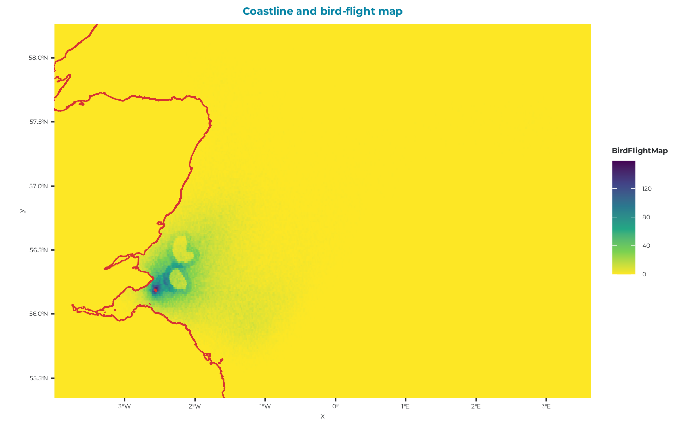
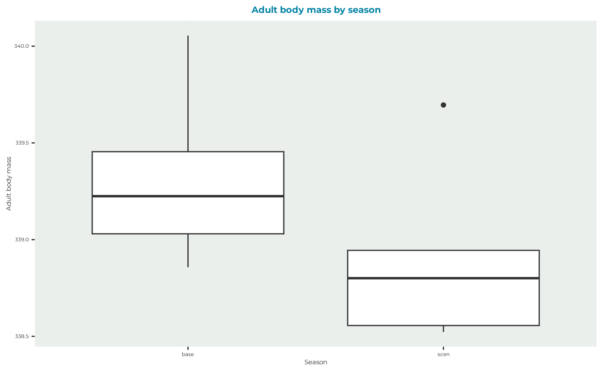
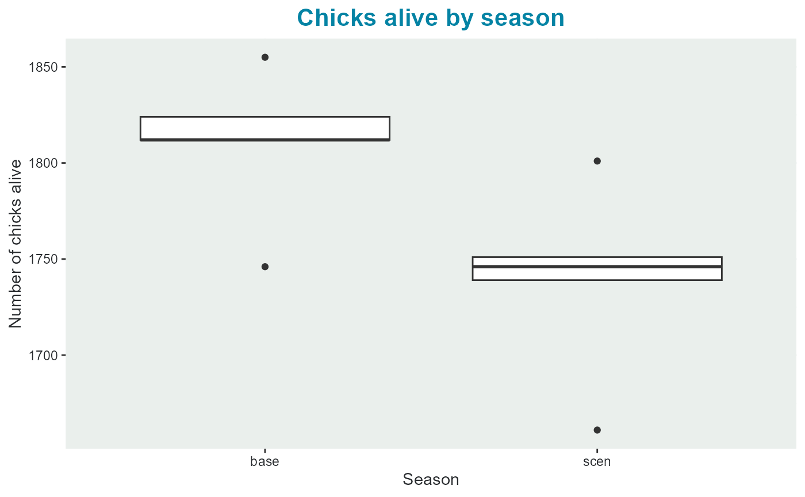
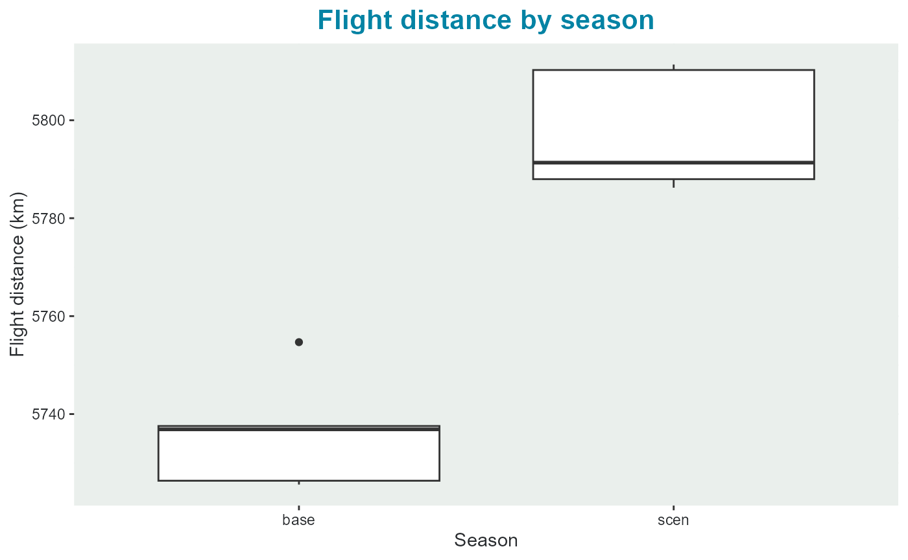

Interpreting the outputs
I_exampleKI_output.RmdOutput - reading and interpretation
The main output of seabORD is a list, where the different elements relate to respective parts of the model e.g., wind farm effects, adult outputs, chick outputs etc.
We shall start by reading in an example output (created from a similar (but not identical) run with the same species (kittiwake), colony (Isle of May), and wind farm set up (Neart na Gaoithe and Inch Cape)).
sbordout <- seabORD::get_example_output()
names(sbordout)
#> [1] "switches" "Parameters" "ordPar" "modPar"
#> [5] "thisRun" "output_f0" "output_c0" "output_a0"
#> [9] "output_y0" "BirdFlightMap" "output_i0" "output_i1"
#> [13] "output_i2" "output_i3" "output_i4" "output_i5"This is an extensive output with 16 elements to the list. The first five elements of the list are related to inputs (“switches”, “Parameters”, “ordPar”, “modPar”, “thisRun”) and we include this information so that the runs will be reproducible and are transparent for anyone inspecting the results.
The following 11 outputs, aside from “BirdFlightMap” are all outputs relating to different components/entities in the model and each element typically has a $data section where the actual data is contained and a $metadata section which describes each of the columns in the output.
“output_f0” - Flight metrics relating to ORD interaction
“output_c0” - Chick metrics e.g., number alive and mean body mass
“output_a0” - Adult metrics e.g., survival and body mass
“output_y0” - Survival metrics relating to calc_pSurvival function which estimates over-winter survival from mass-survival relationships
“BirdFlightMap” - a flight map of locations - note this is just for visual assessment
“output_i0”
“output_i1”
“output_i2”
“output_i3”
“output_i4”
“output_i5”
BirdFlightMap
Let’s plot the flight map location output just to see that the run has performed as intended. From this plot we can see clearly the two ORD footprints, with a higher density of foraging location in the 5km displacement zone surrounding each ORD. Some birds have foraging inside the ORD footprints - these will have been indiviudals which were not assigned as displacement susceptible.
seabORD::plot_BirdFlightMap(
sbordout$BirdFlightMap
)
Adult output (output_a0)
Read the adult output metadata and data.
# inspect adult metric descriptions
dplyr::glimpse(sbordout$output_a0$metadata)
#> Rows: 25
#> Columns: 3
#> $ VarName <chr> "Rep", "Prey", "Season", "t", "N_alive_ad", "N_dead_ad"…
#> $ VarDescription <chr> "Replicate run number", "Median prey available", "Seaso…
#> $ VarUnits <chr> "", "g/area", "", "", "", "", "g", "g", "g", "g", "g", …
#inspect the adult output
dplyr::glimpse(head(sbordout$output_a0$data))
#> Rows: 6
#> Columns: 25
#> $ Rep <dbl> 1, 1, 2, 2, 3, 3
#> $ Prey <dbl> 173.00, 173.00, 173.25, 173.25, 173.50, 173.50
#> $ Season <chr> "base", "scen", "base", "scen", "base", "scen"
#> $ t <dbl> 30, 30, 30, 30, 30, 30
#> $ N_alive_ad <dbl> 5796, 5796, 5796, 5796, 5796, 5796
#> $ N_dead_ad <dbl> 0, 0, 0, 0, 0, 0
#> $ BM_adult_t0.mn <dbl> 372.4993, 372.4993, 372.5284, 372.5284, 371.9655, 37…
#> $ BM_adult_t0.sd <dbl> 33.82550, 33.82550, 33.07026, 33.07026, 33.29260, 33…
#> $ BM_adult.mn <dbl> 339.2246, 338.8007, 339.4544, 338.9445, 338.8575, 33…
#> $ BM_adult.sd <dbl> 34.03021, 33.99535, 33.22776, 33.14232, 33.41130, 33…
#> $ BM_condition.mn <dbl> 0.9103030, 0.9091455, 0.9109057, 0.9095312, 0.910670…
#> $ BM_condition.sd <dbl> 0.02876942, 0.02828565, 0.02902028, 0.02839074, 0.02…
#> $ trips_n.mn <dbl> 1.976018, 1.971877, 1.982402, 1.984645, 1.967564, 1.…
#> $ trips_n.sd <dbl> 0.5280185, 0.5352809, 0.5238414, 0.5485306, 0.495345…
#> $ flying_h.mn <dbl> 3.823523, 3.854066, 3.882985, 3.907829, 3.913761, 3.…
#> $ flying_h.sd <dbl> 2.768509, 2.798944, 2.761850, 2.775534, 2.833579, 2.…
#> $ foraging_h.mn <dbl> 8.590286, 8.498789, 8.688921, 8.610363, 8.794105, 8.…
#> $ foraging_h.sd <dbl> 2.948922, 2.972429, 2.879241, 2.931643, 2.881427, 2.…
#> $ colony_h.mn <dbl> 21.46175, 21.55700, 21.26691, 21.36163, 21.10829, 21…
#> $ colony_h.sd <dbl> 4.337336, 4.427567, 4.222710, 4.308765, 4.276955, 4.…
#> $ at_sea_h.mn <dbl> 2.124446, 2.090147, 2.161189, 2.120180, 2.183846, 2.…
#> $ at_sea_h.sd <dbl> 0.8978029, 0.8818137, 0.9023587, 0.8858647, 0.929709…
#> $ forage_g.mn <dbl> 213.9551, 212.1129, 216.6581, 214.9865, 218.3186, 21…
#> $ forage_g.sd <dbl> 57.13640, 57.87041, 56.26048, 57.20981, 56.22470, 57…
#> $ AdultsSurvivingBS <dbl> 1, 1, 1, 1, 1, 1You will see that there are 4 replicates of prey values here with respective rows for baseline (“Season$base”) and scenario (“Season$scen”) matched runs, giving a total of 8 rows.
Conceivably, the average condition of adults across scenario runs at the end of the simulation (BM_adult.mn), will be lower than that for baseline runs. So let’s plot that and have a look…
seabORD::plot_adult_body_mass(
sbordout_output_adults = sbordout$output_a0
)
Chick output (output_c0)
# inspect adult metric descriptions
dplyr::glimpse(sbordout$output_c0$metadata)
#> Rows: 18
#> Columns: 3
#> $ VarName <chr> "Rep", "Prey", "Season", "t", "N_alive_ch", "N_dead_ch"…
#> $ VarDescription <chr> "Replicate run number", "Median prey available", "Seaso…
#> $ VarUnits <chr> "", "g/area", "", "", "", "", "g", "g", "", "", "", "",…
#inspect the chcik output
dplyr::glimpse(head(sbordout$output_c0$data))
#> Rows: 6
#> Columns: 18
#> $ Rep <dbl> 1, 1, 2, 2, 3, 3
#> $ Prey <dbl> 173.00, 173.00, 173.25, 173.25, 173.50, 173.50
#> $ Season <chr> "base", "scen", "base", "scen", "base", "scen"
#> $ t <dbl> 30, 30, 30, 30, 30, 30
#> $ N_alive_ch <dbl> 1746, 1661, 1812, 1746, 1812, 1739
#> $ N_dead_ch <dbl> 1152, 1237, 1086, 1152, 1086, 1159
#> $ BM_chick.mn <dbl> 337.3477, 336.8720, 337.2851, 336.9933, 337.5211, 336.…
#> $ BM_chick.sd <dbl> 6.267519, 6.220798, 6.532156, 6.284795, 6.278793, 6.23…
#> $ BM_condition.mn <dbl> 0.9217150, 0.9204154, 0.9215439, 0.9207466, 0.9221889,…
#> $ BM_condition.sd <dbl> 0.01712437, 0.01699672, 0.01784742, 0.01717157, 0.0171…
#> $ CoD.none <dbl> 1746, 1661, 1812, 1746, 1812, 1739
#> $ CoD.killed <dbl> NA, NA, NA, NA, NA, NA
#> $ CoD.starved <dbl> 3, 3, NA, NA, NA, NA
#> $ CoD.unattended <dbl> 1033, 1113, 957, 1022, 960, 1036
#> $ CoD.parentdead <dbl> NA, NA, NA, NA, NA, NA
#> $ CoD.abandoned <dbl> NA, NA, NA, NA, NA, NA
#> $ CoD.other <dbl> 116, 121, 129, 130, 126, 123
#> $ ChicksPerNest <dbl> 0.6024845, 0.5731539, 0.6252588, 0.6024845, 0.6252588,…Conceivably, the number of survivy chicks across scenario runs at the end of the simulation (N_alive_ch), will be lower than that for baseline runs…
seabORD::plot_chick_survival(
sbordout_output_chicks = sbordout$output_c0
)
Flight related output (output_f0)
# inspect adult metric descriptions
dplyr::glimpse(sbordout$output_f0$metadata)
#> Rows: 20
#> Columns: 3
#> $ VarName <chr> "Rep", "Season", "TotN_C_risk.mn", "TotN_C_risk.sd", "T…
#> $ VarDescription <chr> "Replicate run number", "Season type, baseline or scena…
#> $ VarUnits <chr> "", "", "", "", "", "", "", "", "", "", "", "", "", "",…
# Isolate the flight related output:
dplyr::glimpse(head(sbordout$output_f0$data))
#> Rows: 6
#> Columns: 21
#> $ Rep <dbl> 1, 1, 2, 2, 3, 3
#> $ Season <chr> "base", "scen", "base", "scen", "base", "scen"
#> $ TotN_C_risk.mn <dbl> 0.000000, 4.743099, 0.000000, 4.751553, 0.000000, 4.864…
#> $ TotN_C_risk.sd <dbl> 0.000000, 6.080542, 0.000000, 6.113681, 0.000000, 6.130…
#> $ TotN_None.mn <dbl> 30.00000, 22.76346, 30.00000, 22.77726, 30.00000, 22.91…
#> $ TotN_None.sd <dbl> 0.000000, 6.218299, 0.000000, 6.207978, 0.000000, 6.219…
#> $ TotN_D_only.mn <dbl> 0.0000000, 0.9582471, 0.0000000, 0.9446170, 0.0000000, …
#> $ TotN_D_only.sd <dbl> 0.000000, 1.244688, 0.000000, 1.224514, 0.000000, 1.226…
#> $ TotN_B_only.mn <dbl> 0.000000, 5.604382, 0.000000, 5.584023, 0.000000, 5.502…
#> $ TotN_B_only.sd <dbl> 0.000000, 4.933621, 0.000000, 4.928235, 0.000000, 4.948…
#> $ TotN_BD.mn <dbl> 0.0000000, 0.6739130, 0.0000000, 0.6940994, 0.0000000, …
#> $ TotN_BD.sd <dbl> 0.0000000, 0.9564905, 0.0000000, 0.9926945, 0.0000000, …
#> $ TotN_trips.mn <dbl> 60.90286, 61.01812, 60.81108, 60.88164, 60.81177, 60.83…
#> $ TotN_trips.sd <dbl> 2.435512, 2.551458, 2.420153, 2.524250, 2.392382, 2.476…
#> $ Tot_basickm.mn <dbl> 5736.879, 5810.263, 5725.603, 5791.343, 5754.685, 5811.…
#> $ Tot_basickm.sd <dbl> 821.0949, 845.0890, 827.0931, 833.9058, 831.9399, 845.4…
#> $ Tot_extrakm.mn <dbl> 0.00000, 65.01389, 0.00000, 66.24488, 0.00000, 64.28236
#> $ Tot_extrakm.sd <dbl> 0.00000, 82.11199, 0.00000, 82.62962, 0.00000, 81.68041
#> $ DispGT0.sm <dbl> 0, 3306, 0, 3287, 0, 3232
#> $ BarrGT0.sm <dbl> 0, 3499, 0, 3504, 0, 3440
#> $ t <int> 30, 30, 30, 30, 30, 30“Tot_basickm.mn” is the mean per replicate of how many km birds flew - which would conceivably be higher for scenario runs due to barrier effects increasing flight distance, so let’s do another basic plot
and we can see that adults in the scenario run typically flew around 50km more on average over the simulation duration than birds with no wind farm interaction.
seabORD::plot_flight_distance(sbordout_output_flight = sbordout$output_f0)
Outputs relating to impacts (i0…5)
Metric: Additional Mortality 1-i1: TRUE means birds never directly impacted
Metric: Additional Mortality 1-i2: TRUE means birds directly impacted in some way at least once
Metric: Additional Mortality 1-i3: TRUE means birds displaced at least once, never barriered
Metric: Additional Mortality 1-i4: TRUE means birds barriered at least once, never displaced
Metric: Additional Mortality 1-i5: TRUE means birds barriered and displaced at least once
Metric: Additional Mortality 1-i6: All impacts grouped separately